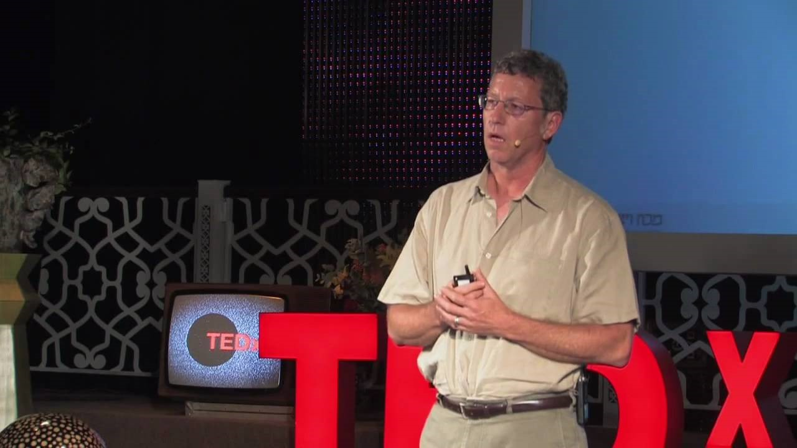

Биологические компьютеры - прорывная технология будущего
-
Биологические компьютеры - прорывная технология будущего
Модель имитировала работу молекулярной машины в живой клетке, собирающей белковые молекулы по информации с ДНК, используя РНК в качестве посредника между ДНК и белком.
В 2001 г. Шапиро удалось реализовать модель в реальном биокомпьютере, который состоял из молекул ДНК, РНК и специальных ферментов. Молекулы фермента выполняли роль аппаратного, а молекулы ДНК – программного обеспечения. В одной пробирке помещалось около триллиона элементарных вычислительных модулей. В результате скорость вычислений достигала миллиарда операций в секунду, а точность – 99,8 %.
Пока биокомпьютер Шапиро может применяться лишь для решения самых простых задач, выдавая всего два типа ответов: «истина» или «ложь». В проведенных экспериментах за один цикл все молекулы ДНК параллельно решали единственную задачу. Однако потенциально они могут трудиться одновременно над разными задачами, в то время как традиционные ПК являются, по сути, однозадачными.